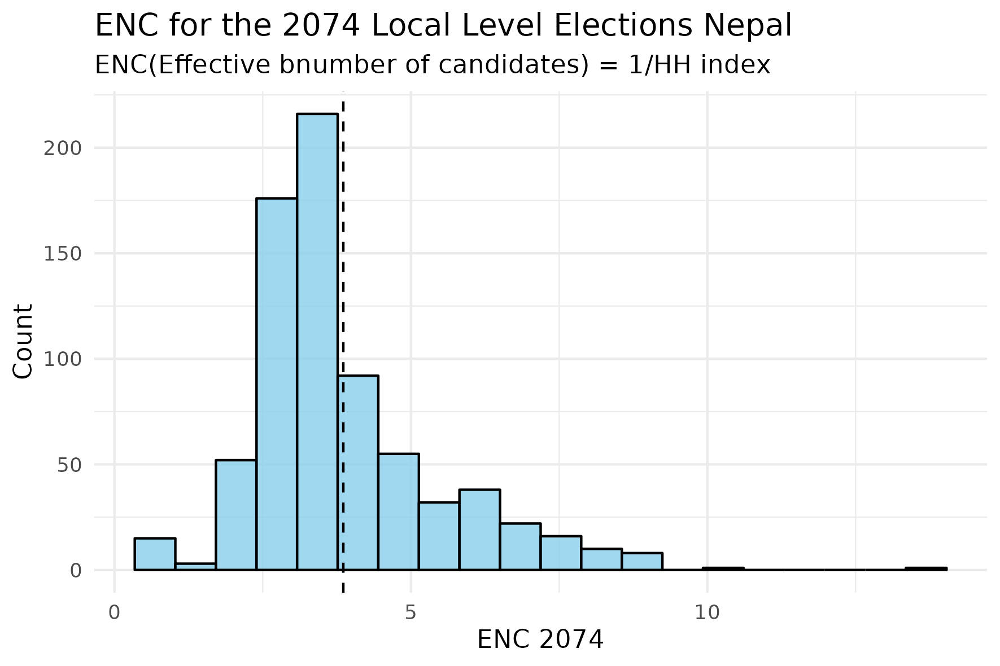
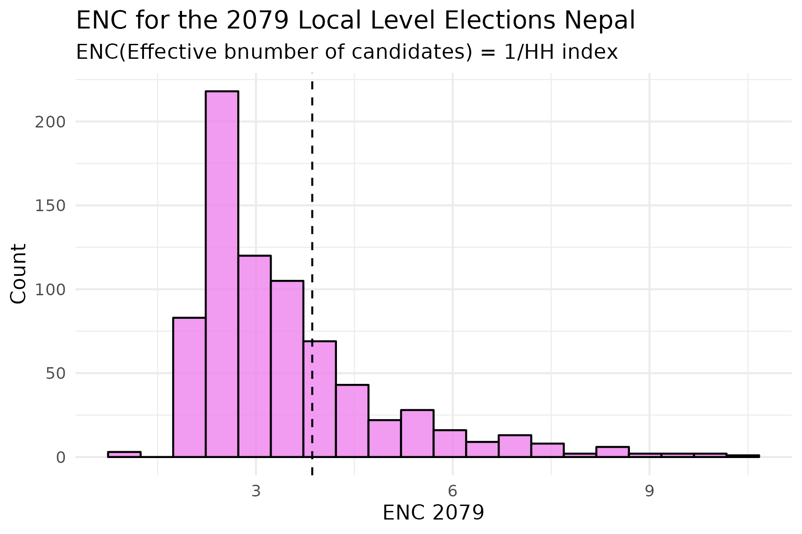
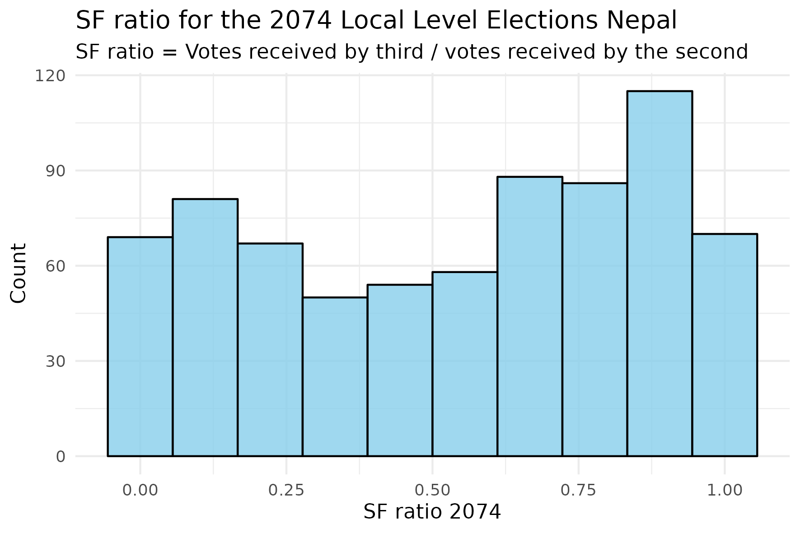
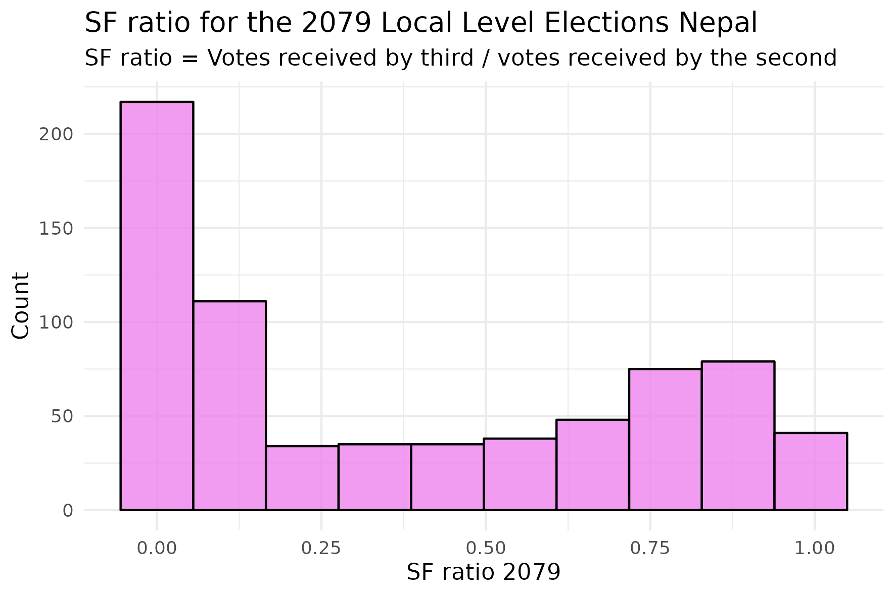
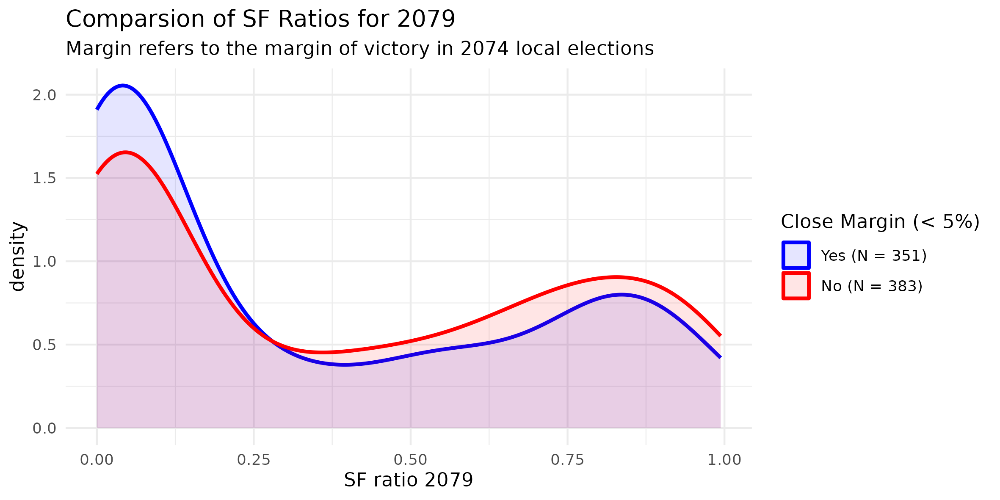
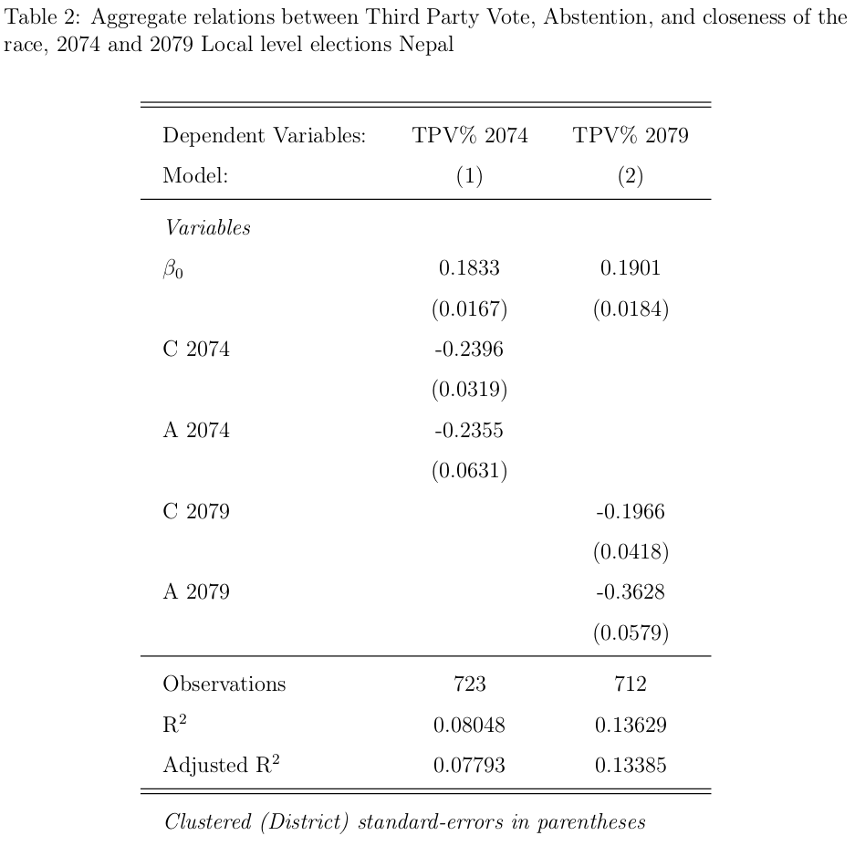

Strategic voting in Nepal’s Local Level Mayoral Elections
Introduction
According to the public choice theory, all political actors act in accordance with their self-interest i.e. they aim to maximize their own objective utility functions. This is assumed true both of political representatives as well as voters. This article concerns the strategic behaviour of voters. Theories on various strands of strategic behaviour are first outlined and then examined using simple empirical measures and proxies in the context of Nepalese Local Government elections of 2017 A.D. (2074 B.S.) and 2022 A.D. (2079 B.S.)1
Effective number of parties/candidates
A relevant question with regards to election outcomes is the nature of electoral competition in each district (in our case a municipality or a rural municipality). Concerning strategic voting, if a voter believes that votes are likely to be concentrated among one or two widely favoured candidates, she could either co-ordinate her vote, or abstain.
A simple estimate that measures the extent of concentration of firm’s share in an industry is the Hirschman-Herfindahl index. The effective number of parties/candidates (ENC) is the reciprocal of the Hirschman-Herfindahl index. This measure is widely used to measure how concentrated vote shares are in electoral contests.
Mathematically:
\[ ENC_{ij} = \frac{1}{\sum_{j} v_{ij}^2} \]
where, \(v_ij\) is the share of votes received by each candidate \(j\) in local jurisdiction \(i\).
Implications
As votes concentrate on a small number of candidates, the effective number of candidates falls below the actual number. If votes concentrate to the point where only two candidates receive any and all votes, ENC becomes 2, an extreme version of Duvergenian bipartanism.2
Result
| Year | 2017 | 2022 |
|---|---|---|
| Mean | 3.86 | 3.45 |
| S.D. | (1.57) | (1.43) |
The results show that 2074 elections were more competitive than 2079 elections with higher concentration of votes among fewer candidates in the 2079 Mayoral Election. However, the overall measure is \(>3\) does not suggest local bipartanism. The distribution of ENCs for each local body for 2074 and 2079 Mayoral elections are presented in the graphs below:


Strategic voting and Duvergenian Equilibria: The bimodality hypothesis.
The bimodality hypothesis concerns the foundational claim that use of ordinary plurality in single-member districts leads to local bipartanism. Since plurality under-represents small parties and candidates because one winner takes all, strategic adaptation concerns voters eager not to waste their votes. This implies voting for a low-ranked candidate that one believes is stronger than a high-ranked candidate that one believes is weak.
This is best explained by the following excerpt from (Cox 1997):
Some voter, whose favourite candidate has a poor change of winning, notices that she has a preference between the top two candidates; she then rationally decides to vote for the most preferred of these top two competitors rather than for her overall favourite, because the latter vote has a much smaller change of actually affecting the outcome than the former. Such a microeconomic decision theoretic model can be extended to consider whether strategic voting by some voters makes such voting by others more or less likely.
As per the theoretical model from (Cox 1997) Corollary 1, the equilibria can be divided into two classes:
Duvergenian Equilibria with two vote getting candidates.
Non-Duvergenian Equilibria with more than two vote getting candidates.
A natural way to measure this is to use the SF ratio, the ratio of the second to the first loser’s vote total. Under a Duvergenian equilibria, the SF will be close to 0. Under non-Duvergenian equilibria, the SF will be close to 1. The results for Nepal’s Local Level Mayoral elections of 2074 and 2079 are presented in the graphs below:


The SF ratio for 2074 Local level elections is relatively bimodal suggesting that voters voted strategically: either deserting third place candidates (SF close to 0) or making third place votes competitive (SF close to 1). The histogram for 2079 is different; it is uni-modal and shows strong evidence of only type of strategic voting, that of desertion of third candidates.
While figure 3 and 4 provide a general overview on strategic desertion, an important question is : “Do close elections in 2074 imply more or less strategic voting in 2079?” Figure 3 shows the distribution of SF for elections that were close in 2074 (the difference between winner and runner up is less than 5 % of the voter turnout ) and elections that were not close.

There seems to be more desertion of third-place candidates in local bodies where the margin of victory was close in the previous election. This aligns with the notion that voters may desert their favoured candidate for a vote that is meaningful and crucial.
Aggregate data test for tactical voting
A final measure of obtaining preliminary estimates on the extent of tactical voting is provided below. Courtesy of (Cain 1978), the regression to be estimated looks at the following hypotheses:
The level of third-party support to be lower in competitive (i.e. closely contested) than in noncompetitive local level (i.e. one-party dominant) since the pressure to defect and cast a meaningful vote will be greater in areas with close races.
Third-party is inversely related to abstention since some potential third-party supporters will prefer to abstain rather than support a losing cause.
The following regression achieves this aim:
\[ \text{TPV %} = \beta_1 + \beta_2C + \beta_3A+u \]
TPV % = Percentage of third party vote in a local body.
C = Difference between the percentage of the vote taken by the party in the first place minus the percentage of vote taken by the party in the second place.
A = Percentage of the eligible electorate abstaining in a local body.
Results
The results for the aforementioned regression is displayed in table 2. The results does appear to confirm the second hypothesis, that third party vote is inversely related to abstention. However, the results contradict hypothesis 1; close elections and third party vote share are inversely related i.e. non-competitive districts seem to have, counterintuitively, lower third party vote percentage. However, these are not structural estimates of causal relations, and as such, there are various mechanisms by which such a relationship may exist.

Conclusion
Most preliminary estimates of strategic voting in Nepal’s local level Mayoral elections align with accepted theories of local bipartanism, strategic desertion of third parties, and rational abstention. However, given some counter-intuitive estimates and no theorized causal structure, these estimates only provide a foundation for further analysis in regards to the underlying processes creating these estimates.